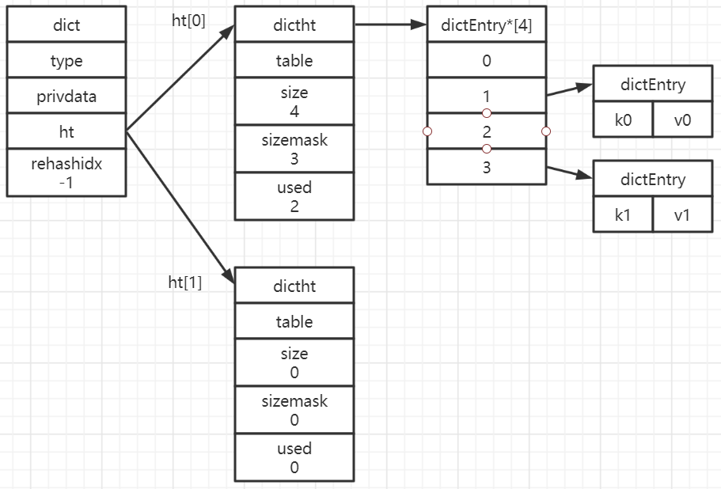

字符串（SDS）
字符串是最基础的类型，所有的键都是字符串类型，且字符串之外的其他几种复杂类型的元素也是字符串
字符串的长度不能超过512M
字符串类型的内部编码有3种
int
8个字节的长整型。当字符串的值是整型时，这个值使用long整型表示
embstr
小于等于44字节的字符串
raw
大于44个字节的字符串
embstr与raw的区别
embstr与raw都使用redisObject和sds保存数据，embstr的使用只分配了一次内存空间，因此redisObject和sds是连续的，而raw需要分配两次内存空间，分别为redisObject和sds分配空间。因此与raw相比，embstr的好处在于创建时少分配一次空间，删除时少释放一次空间，以及对象的所有数据连在一起方便寻找。但embstr的字符串长度增加到时需要重新分配内存时，整个redisObject和sds都需要重新分配空间，因此redis中的embstr实现为只读。
Redis 3.2版本之前embstr和raw进行区分的长度是39，因为redisObject的长度是16字节，sds的长度是9加上字符串长度，因此当字符串长度是39时，embstr的长度正好是16+9+39=64，jemalloc正好可以分配64字节的内存单元。
Redis 3.2版本之后embstr和raw进行区分的长度是44，因为redisObject的长度是16字节，sds的长度是4加上字符串长度，因此当字符串长度是44时，embstr的长度正好是16+4+44=64，jemalloc正好可以分配64字节的内存单元。
测试
1 | 127.0.0.1:6380> set intkey 123 |
列表
列表用来存储多个有序的字符串，每个字符串称为元素。一个列表可以存储2^32-1个元素。Redis中的列表支持两端插入和弹出，并可以获得指定位置或范围的元素，可以充当数组、队列、栈等
Redis 3.0之前列表的内部编码可以是压缩列表（ziplist）或双端链表（linkedlist），Redis列表可以在这两种数据类型之间进行转换。但转换也是个费时且复杂的操作，所以在Redis 3.2版本之后引入了一种新的数据格式，结合了双端链表和压缩列表的特点，也就是快速列表（quicklist），所有的节点都用quicklist存储，省去了到临界条件时的格式转换。
压缩列表（ziplist）
当一个列表只包含少量列表项时，并且每个列表项是小整数值或短字符串，那么Redis会使用压缩列表来做该列表的底层实现。
压缩列表是Redis为了节省内存而开发的，是由一系列特殊编码的连续内存块组成的顺序型数据结构，一个压缩列表可以包含任意多个节点，每个节点可以保存一个字节数组或者一个整数值，放到一个连续内存区。
压缩列表节点结构：
- previous_entry_ength：记录压缩列表前一个字节的长度
- encoding：保存content的类型
- content：保存节点的内容，节点内容类型和长度由encoding决定
双端链表
双端链表由一个list结构和多个listNode结构组成
双端链表结构：
双端链表同时保存了表头指针和表尾指针，每个节点都有指向前和指向后的指针，链表中保存了列表的长度。dup、free、match为节点值设置类型特定函数，所以链表可以用于保存各种不同类型的值。链表中每个节点指向的是type为字符串的redisObject。
快速列表
快速列表也可以看作是一个双端链表，但是列表的每个节点都是一个ziplist，快速列表是linkedlist和ziplist的结合。quicklist中的每个节点都能够存储多个数据元素。从Redis 3.2开始，列表采用quicklist进行编码。
快速列表结构：
结构：
1 | typedef struct quicklist { |
哈希
哈希作为一种数据结构，不仅是Redis对外提供的5种对象类型的一种（内层哈希），也是Redis作为Key-Value数据库所使用的数据结构（外层哈希）。
内层哈希使用的内部编码可以是压缩列表（ziplist）和哈希表（hashtable）两种，外层哈希则只使用了hashtable。
与哈希表相比，压缩列表用于元素个数少、元素长度小的场景，其优势在于集中存储，节省空间。虽然对于元素的操作复杂度也由O(1)变为了O(n)，但由于哈希中元素较少，因此操作的时间并没有明显优势。
hashtable结构
一个hashtable由一个dict结构、两个dictht结构、一个dictEntry指针数组（bucket）和多个dictEntry结构组成

dict结构
1 | typedef struct dict { |
type属性和privdata属性是为了适应不同类型的键值对，用于创建多态字典
ht属性和trehashidx属性则用于rehash，即当哈希表需要扩展或收缩时使用。ht是一个包含两个项的数组，每项都指向一个dictht结构，这也是Redis的哈希会有一个dict、两个dictht结构的原因。通常情况下，所有的数据都是存放在dict的ht[0]中，ht[1]只在rehash的时候使用。dict进行rehash操作的时候将ht[0]中的所有数据rehash到ht[1]中，然后将ht[1]赋值给ht[0]，并清空ht[1]。
Redis中的哈希之所以在dictht和dictEntry结构之外还有一个dict结构，一方面是为了适应不同类型的键值对，另一方面是为了rehash。
dictht结构
1 | typedef struct dictht { |
说明：
- table属性是一个指针，指向bucket
- size属性记录了哈希表的大小，即bucket的大小
- used记录了已使用的dictEntry的数量
- sizemask属性的值总是size - 1，这个属性和哈希值一起决定一个键在table中存储的位置
bucket
bucket是一个数组，数组的每个元素都是指向dictEntry结构的指针，Redis中bucket数组的大小是大于dictEntry数量的最小的2^n，比如有1000个dictEntry，那么bucket的大小为1024，如果有1500个dictEntry，则bucket的大小为2048。
dictEntry
dictEntry结构用于保存键值对，结构如下：
1 | typedef struct dictEntry { |
各属性的功能如下：
- key：键值对中的键
- val：键值对中的值，使用union共用体实现，存储的内容既可能是一个指向值的指针，也可能是64位整型，或无符号64为整数
- next：指向下一个dictEntry，用于解决哈希冲突问题
- 在64位系统中，一个dictEntry对象24字节，其中key、val、next各占8个字节
编码转换
Redis中内层哈希既可能使用哈希表，也可能使用压缩列表，只有同时满足下面两个条件时，才会使用压缩列表：
- 哈希中元素数量小于512个
- 哈希中所有键值对的键和值字符串长度都小于等于64字节
1 | 127.0.0.1:6380> hset hashTransfer k1 v1 |
集合
集合与列表类似，都是用来保存多个字符串，但集合与列表不同的是：集合中的元素是无序的，不能通过索引来操作元素；集合中的元素不能有重复。
一个集合中最多可以存储2^32 - 1个元素，除了支持常规的增删改查，Redis还支持多个集合取交集、并集、差集。
集合的内部编码可以是整数集合（intset)或哈希表（hashtable），当集合在使用哈希表时，值全部被置为null。
intset
1 | typedef struct intset { |
encoding代表contents中存储内容的类型，虽然contents是int8_t类型，但实际上其存储的值是int16_t、int32_t或int64_t，具体的类型便是由encoding决定的。length表示元素个数。
整数集合适用于集合所有元素都是整数且集合元素数量较小的时候，与哈希表相比，整数集合的优势在于集中存储，节省空间。同时，虽然对于元素的操作复杂度由O(1)变成了O(n)，但由于集合数量较少，因此操作的时间并没有明显劣势。
编码转换
只有同时满足下面两个条件时集合才会使用整数集合：
- 集合中元素数量小于512个
- 集合中所有元素都是整数值
如果有一个条件不满足，则使用哈希表，且编码只能由整数集合转化为哈希表，不能由哈希表转换为整数集合
1 | 127.0.0.1:6380> sadd setTransfer 111 222 333 |
有序集合
有序集合与集合的元素都不能重复，且有序集合中的元素是有顺序的，有序集合为每个元素设置一个分数作为排序依据。
有序集合的内部编码可以是压缩列表（ziplist）或者跳跃表（skiplist）。跳跃表是一种有序数据结构，通过在每个节点中维持多个指向其他节点的指针，从而达到快速访问节点的目的。除了跳跃表，实现有序数据结构的另一种典型实现是平衡树。大多数情况下，跳跃表的效率可以和平衡树媲美，且跳跃表实现比平衡树简单很多，因此Redis中选用跳跃表代替平衡树。跳跃表支持平均O(logN)、最坏O(N)的复杂度进行节点查找，并支持顺序操作。
跳跃表
普通单向链表结构如下：
跳跃表结构如下：
跳跃表插入流程
跳跃表在初始状态下还没有节点：
插入值为-5的节点：
以抛硬币的方式判断是否需要将值为-5的节点添加到第二层，其结果是需要添加到第二层：
继续抛硬币，判断是否需要将值为-5的节点添加到第三层，其结果是不需要，接着插入值为5的节点到第一层：
判断值为5的节点是否需要添加到第二层，其结果为不需要，继续添加值为8的节点到第一层：
判断值为8的节点是否需要添加到第二层，其结果为需要：
继续判断值为8的节点是否需要添加到第三层，其结果为需要：
继续判断值为8的节点是否需要添加到第四层，其结果为需要：

以此类推，直到不需要继续添加下一层为止。因为插入节点的数量很小，其结果很可能不是一个理想的跳跃表。但是如果节点的数量很大，最终的表结构肯定非常接近理想的跳跃表，也就是隔一个跳跃一下。
跳跃表的删除
跳跃表的删除操作与普通的链表删除操作完全一样，直接删除元素，然后调整一下删除元素后的指针即可。
跳跃表总结
Redis的跳跃表实现由zskiplist和zskiplistNode两个结构组成，前者用于保存跳跃表信息（如头结点、尾结点、长度等），后者用于表示跳跃表节点。
搜索：从最高层的链表节点开始，如果比当前节点要大，比当前层的下一个节点要小，那么则往下找，也就是和当前层的下一层的节点的下一个节点进行比较，以此类推，一直找到最底层的最后一个节点，如果找到则返回，反之则返回空。
插入：首先确定插入的层数，以抛硬币为例，如果是正面就累加，直到遇到反面为止，最后记录正面的次数作为插入的层数。当确定插入的层数L后，将新元素插入到从底层到L层。
删除：在各个层中找到包含指定值的节点，然后将节点从链表中删除即可，如果删除以后只剩下头尾两个节点，则删除这一层。
为了加快插入速度，不再每一层都进行判断，而是判断一次后插入1~31之间的随机层数
跳跃表结构：
1 | typedef struct zskiplistNode { |
编码转换
只有同时满足下面两个条件时才会使用压缩列表：
- 有序集合中元素数量小于128个
- 有序集合中所有成员长度都不足64字节
如果有一个条件不满足，则使用跳跃表，且编码只能由压缩列表转化为跳跃表，不能由跳跃表转换为压缩列表。
1 | 127.0.0.1:6380> zadd zsetTransfer 1 A 2 B 3 C |